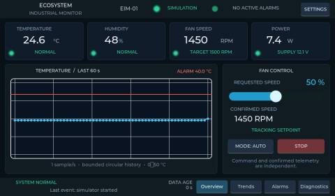
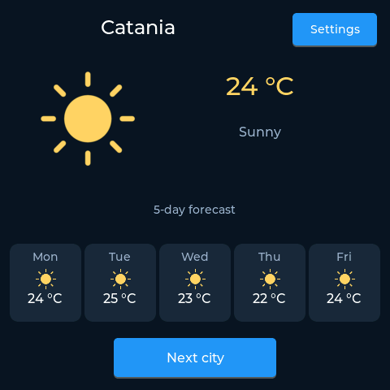
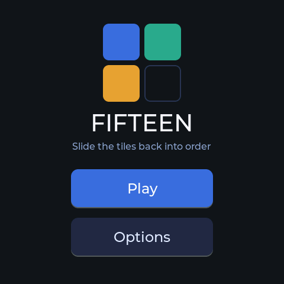
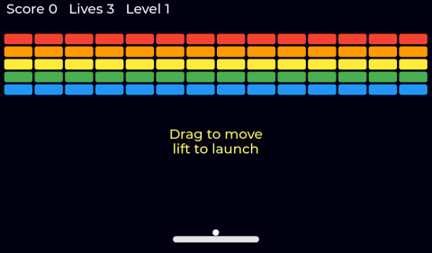
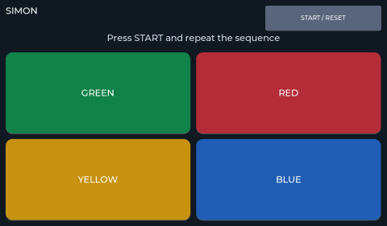

Browser demos¶
These applications and games run locally in your browser on one shared WebAssembly runtime. The flash and RAM figures are measured by the IDE; RAM is a 64-bit simulator estimate and overestimates 32-bit boards.

EIM-01
A five-page industrial monitor with live trends, alarms, diagnostics, and independent fan commands and telemetry.
- Type
- Application
- Resolution
- 1024 × 600
- Flash
- 98.5 KiB
- RAM
- 253.1 KiB
Creation prompt
# EIM-01 — Ecosystem Industrial Monitor Use the lvgl-ide MCP server. **Specific version:** 0.1 **Application:** Embedded HMI for an experimental ventilation bench **Primary target:** 1024 × 600, STM32H743 **Secondary target:** 480 × 480, ESP32-S3 **Stack:** MicroPython + LVGL **Initial data source:** Internal simulation **Future data interfaces:** TCP/Wi-Fi, USB serial, BLE ## Objective Build an interactive HMI application to monitor and control a small ventilation bench with environmental and electrical sensors. The application must be editable visually in the IDE, runnable in the simulator, and deployable to compatible boards. All interface elements must be created through the GUI Builder MCP tools and remain editable in the original project. ## Screen 1 — Overview This is the main screen and must be usable on a 1024 × 600 touch display. **Top bar (56 px high)** - Logo/name: ECOSYSTEM | INDUSTRIAL MONITOR - Device identifier: EIM-01 - Communication status: ONLINE, OFFLINE, SIMULATION - Global alarm indicator - Settings button **Upper area with four numeric indicators** 1. TEMPERATURE: main value 24.6 °C, status NORMAL. 2. HUMIDITY: main value 48 %, status NORMAL. 3. FAN SPEED: speed 1450 RPM, target 1500 RPM. 4. POWER: power 7.4 W, supply 12.1 V. Each indicator must have a title, a large numeric value, a unit of measurement, and a small status indicator. **Central left area** A line chart of temperature over time, with a 60-second window and an update every second. It must also display a configurable alarm threshold, for example 40 °C. If the widget supports multiple series, humidity may be added on a separate scale; for the first version, a single quantity is preferable to ensure readability. **Central right area** A FAN CONTROL panel containing: - Requested speed: 0–100 %. - Touch-adjustable slider. - Actual speed in RPM. - AUTO/MANUAL mode. - START/STOP button. The panel must clearly show the difference between the requested command and the state actually confirmed by the system. **Bottom bar** - Status: SYSTEM NORMAL / WARNING / ALARM. - Last significant event. - Age indicator for the latest data. - Overview, Trends, Alarms, and Diagnostics navigation. ## Screen 2 — Trends Displays the trends of the monitored quantities. - Temperature chart. - Fan speed chart. - Selectable observation intervals: 1 minute, 5 minutes, and 15 minutes, where permitted by the available history. - Ability to pause chart scrolling without stopping acquisition. - Minimum, maximum, and average values over the selected interval. Data does not initially need to be saved permanently. A circular history in RAM is sufficient. ## Screen 3 — Alarms Displays and manages events and alarms. Initial alarms: - TEMP_HIGH: temperature above 40 °C. - FAN_STALL: speed well below the expected value for a configured interval. - SENSOR_LOST: invalid or unavailable sensor data. - LINK_LOST: interrupted communication. - POWER_LOW: voltage below the configured threshold. Each event must include a code, level, status, timestamp, and description. Distinguish at least the ACTIVE, ACKNOWLEDGED, and CLEARED states. The ACKNOWLEDGE button confirms that the alarm has been seen, but does not automatically remove the condition that produced it. ## Screen 4 — Diagnostics Displays technical system information. - Board name. - Firmware identifier. - Data protocol version. - Currently selected data source. - Connection status. - Received and discarded message counts. - Last received sequence. - Free memory, if available. - Uptime. - Any update times and LVGL performance metrics. Parameters unavailable on a particular target must be displayed as N/A, not as zero. ## Screen 5 — Settings - Data source selection: SIMULATION, TCP, SERIAL, BLE if available. - Alarm thresholds. - UI update frequency. - Connection settings. - Data simulator enablement. - Restoration of default settings. Do not issue physical commands or make persistent changes without a clear user action. ## Simulation mode Create a realistic, deterministic data generator that can be used without connected devices. The fan must respond to commands by changing RPM gradually, without instantaneous jumps. Temperature must evolve slowly, with a limited noise component. The application must support at least these reproducible scenarios: 1. Normal operation. 2. A progressive temperature increase up to the alarm threshold. 3. A fan that does not reach the requested speed. 4. A temporary loss of communication. 5. Recovery after a fault. The scenarios must be activatable in demo mode without changing the application code. ## Robustness requirements - Missing data must not cause an exception in the interface. - Numeric values must be validated before display. - A value that has not been updated must be marked as STALE. - A disconnection must leave the interface operational. - Charts must use fixed-size buffers. - The update cycle must not block the thread that manages LVGL. - Network and serial operations must have defined timeouts. - Settings must not be saved on every slider movement. ## MCP requirements The agent must create all screens and their widgets through the IDE MCP tools. Application logic must be separated from UI creation, maintaining a maintainable architecture. The generated application must be kept as an editable project and must be exportable to MicroPython. The agent must run tests in the simulator and document the results, without claiming that tests that were not run have passed. ## Acceptance criteria for the first version 1. All screens open without errors. 2. Overview displays data generated by the simulator. 3. The temperature chart updates in real time. 4. The slider changes the simulated fan setpoint. 5. RPM gradually reaches the expected speed. 6. A temperature fault generates an alarm. 7. The alarm can be acknowledged without clearing a condition that is still active. 8. Communication loss mode displays stale data. 9. The simulator continues to work after recovery. 10. The project remains editable in the IDE and exportable to MicroPython.

Weather
A weather station with a five-day forecast, three cities, and a settings page for Celsius or Fahrenheit.
- Type
- Application
- Resolution
- 480 × 480
- Flash
- 20.3 KiB
- RAM
- 46.0 KiB
Creation prompt
Build a weather station for the ESP32-4848S040: the current temperature of a city, a five-day forecast, a button to change city, and a settings page to switch between Celsius and Fahrenheit. Check that it works before you finish.

Fifteen
A sliding puzzle with fifteen tiles and one gap. Choose a shuffle level, then put the tiles back in order.
- Type
- Game
- Resolution
- 480 × 480
- Flash
- 13.0 KiB
- RAM
- 41.4 KiB
Creation prompt
Implement the fifteen puzzle using the LVGL MCP server.

Breakout
Move the paddle, launch the ball, and clear the coloured bricks without running out of lives.
- Type
- Game
- Resolution
- 1024 × 600
- Flash
- 27.3 KiB
- RAM
- 43.2 KiB
Creation prompt
Implement the Breakout game using the LVGL MCP server.

Simon
Watch the four coloured pads and repeat an increasingly long sequence, with visual and audible cues.
- Type
- Game
- Resolution
- 1024 × 600
- Flash
- 18.8 KiB
- RAM
- 15.9 KiB
Creation prompt
Implement the Simon game using the LVGL MCP server.